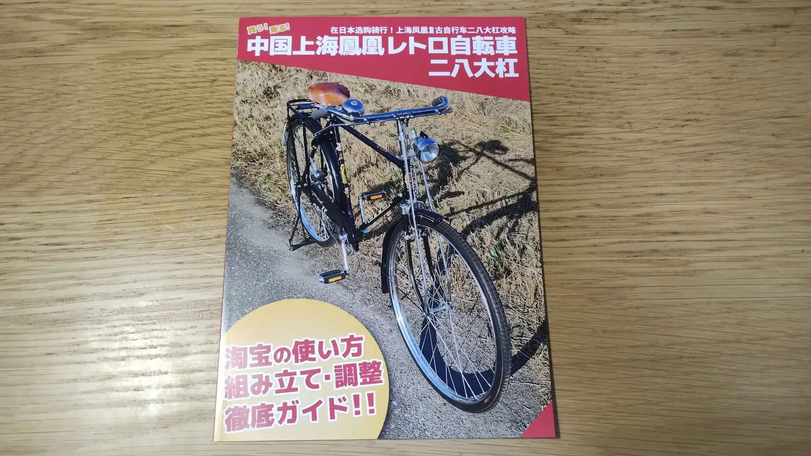
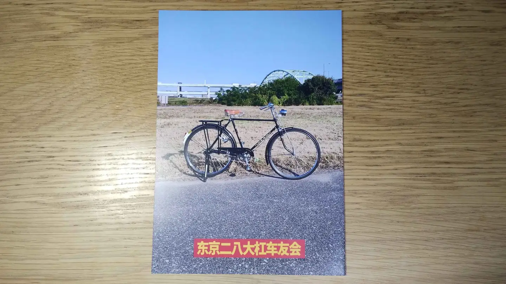

買う！乗る！中国上海鳳凰レトロ自転車 二八大杠
【本書は絶版です】
2024年12月30日、コミックマーケット105（C105）で委託頒布した評論同人誌です。
 中国でいまも新車が作られている、28インチのロッドブレーキ自転車を紹介した同人誌です。現地では「二八大杠」（アルパーターカン）と呼ばれている種類の自転車について解説しています。
- 本文20ページ
- オンデマンド
- フルカラー
2024年12月30日月曜日に開催されたコミックマーケット105（C105）で委託頒布させていただきました。
【本書は絶版です】
本書は、中国製のこのような自転車を触り始めたばかりの時期に作成した本で内容が古いため絶版となりました。
扱っている自転車についても2024年製の新車で、その後、現代のこのような中国製レトロ自転車は品質がとても低く、現地の愛好家の趣味の対象ではないことを知りました（現地の愛好家は1980年代以前の、改革開放で競争が激しくなり品質低下する以前の自転車を買い集めています）。
内容面についても、淘宝で自転車を個人輸入する方法という本質的ではない情報に4ページも割いてしまったため、内容が薄くなってしまい後悔しています。
今後は、その後得た知見や、もっと古い時代の、よい作りの中国製自転車について広く深く扱った評論同人誌を作成できればと思っています。
2026年1月20日記事公開